Liu Shaoqi, the head of state, and Deng Xiaoping led the recovery after the famine.
Sources: Ebrey, Ch. 27, pp. 482–484.
Segment 1 of 3 · 1962–1967
Mao Turned on His Party
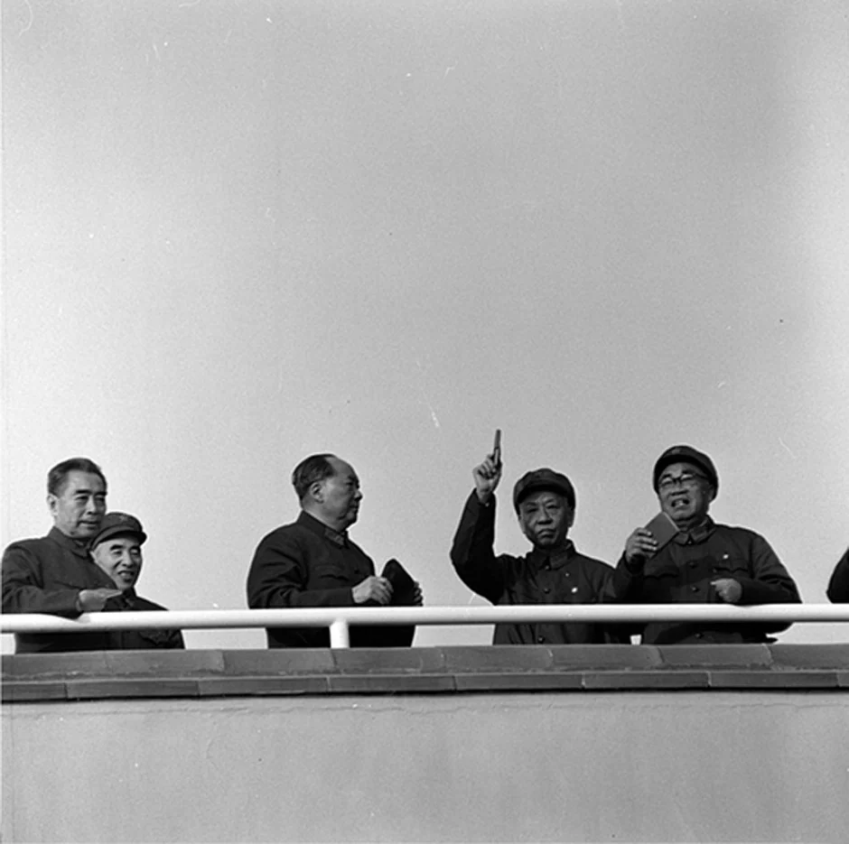
Mao, Liu Shaoqi, Zhou Enlai, Zhu De, and Lin Biao on the Tiananmen rostrum, receiving Red Guards on 15 September 1966. Within a year Liu was a prisoner. Photo: Meng Zhaorui. Public domain, Wikimedia Commons.
Mao called on China’s students to attack the party he had built.
This segment teaches the history behind Review Question 10, and it ends with a short self-check and then the question itself.
Q10 story · Beijing · 1959–1965
After the Famine, Liu Shaoqi Ran the State and Mao Felt Pushed Aside
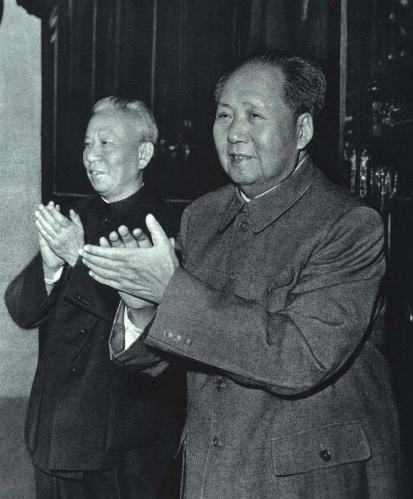
Liu Shaoqi, head of state, and Mao at the National Day celebrations, October 1964. Public domain, Wikimedia Commons.
In 1959 Liu Shaoqi replaced Mao as head of state, and with Deng Xiaoping he revived the economy.
Mao stepped back from daily decisions and lived apart, surrounded by guards.
He feared that revisionism was taking over the party, as he believed it had in Moscow.
When Liu and Deng softened his Socialist Education campaign, Mao decided they were the revisionists.
Sources: Ebrey, Ch. 27, p. 484.
Q10 story · Beijing and Shanghai · 1965–1966
A Play About an Honest Ming Official Became the First Target
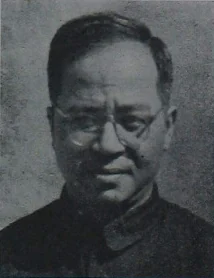
Wu Han, historian of the Ming and deputy mayor of Beijing, 1949. He wrote the play and died in prison in 1969. Public domain, Wikimedia Commons.
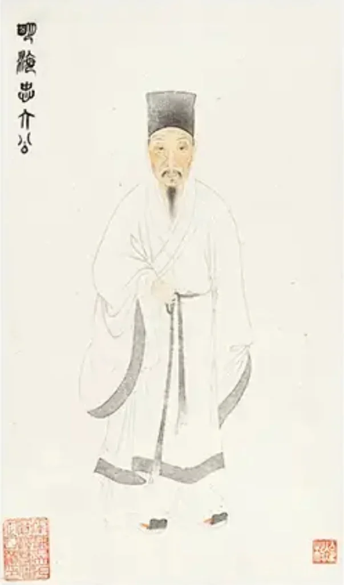
Hai Rui, the Ming official who criticized the emperor, in a later portrait. Public domain, Wikimedia Commons.
In 1961 the historian Wu Han wrote a play about Hai Rui, the Ming official who told the emperor the truth. Ch. 14 L1 · hai-rui ↗
In November 1965 a Shanghai critic charged that the play attacked Mao for dismissing Peng Dehuai.
In the spring of 1966 the mayor of Beijing, Peng Zhen, who had protected Wu Han, was purged.
Radical students at Beijing University then put up a poster against their university’s leaders.
Sources: Ebrey, Ch. 27, p. 484; Roderick MacFarquhar and Michael Schoenhals, Mao’s Last Revolution (2006).
Q10 story · Beijing · May–August 1966
Mao’s Cultural Revolution Small Group Took Over the Campaign
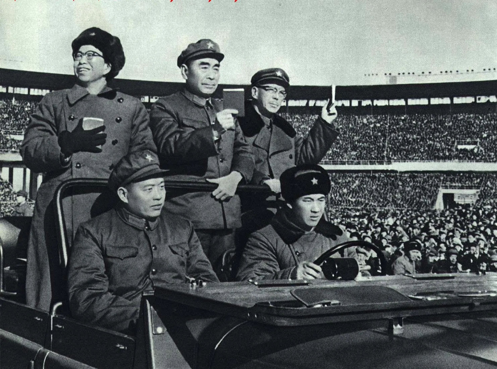
Jiang Qing, Zhou Enlai, and Kang Sheng receive Red Guards in Beijing, December 1966. Public domain, Wikimedia Commons.
In May 1966 a new Cultural Revolution Small Group was formed, answering to Mao alone.
Mao’s former secretary Chen Boda headed it, with Kang Sheng as adviser and Mao’s wife, Jiang Qing, as a deputy.
When Liu Shaoqi sent work teams to calm the universities, Mao called it suppression of the students.
In August a meeting of the Central Committee demoted Liu, and Lin Biao became Mao’s second-in-command.
Names to know
Chen Bodahead of the Small Group
Kang Shengits adviser, security chief
Jiang QingMao’s wife, its deputy head
Lin Biaodefense minister, Mao’s new heir
Sources: Ebrey, Ch. 27, p. 484; MacFarquhar and Schoenhals, Mao’s Last Revolution (2006).
Q10 story · Every city · 1966
Students Formed Red Guards, and Mao Received Them in Tiananmen Square
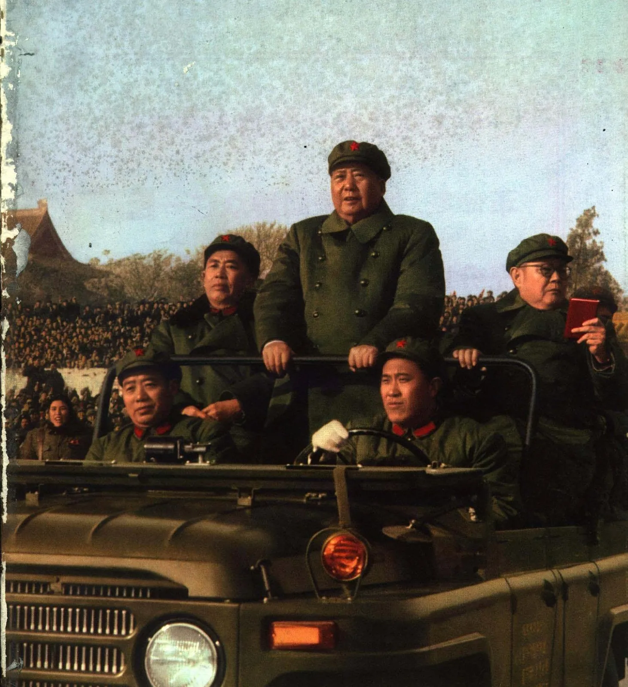
Mao, in army uniform, reviews Red Guards from an open car in Beijing, late 1966. Public domain, Wikimedia Commons.
In June 1966 schools and universities closed, and students gave all their time to the Red Guards.
Millions rode trains for free to spread the movement or to see Mao in Beijing.
At eight huge rallies Mao, in army uniform, reviewed them; his slogan “to rebel is justified” was everywhere.
Earlier that August he had written his own poster calling on them to “bombard the headquarters.”
Sources: Ebrey, Ch. 27, p. 484.
Q10 story · Every home · 1964–1969
Lin Biao Put Mao’s Words in Every Pocket
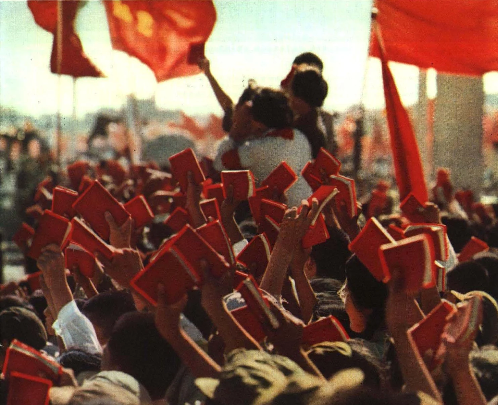
A crowd holds up Quotations from Chairman Mao, 1967. Public domain, Wikimedia Commons.
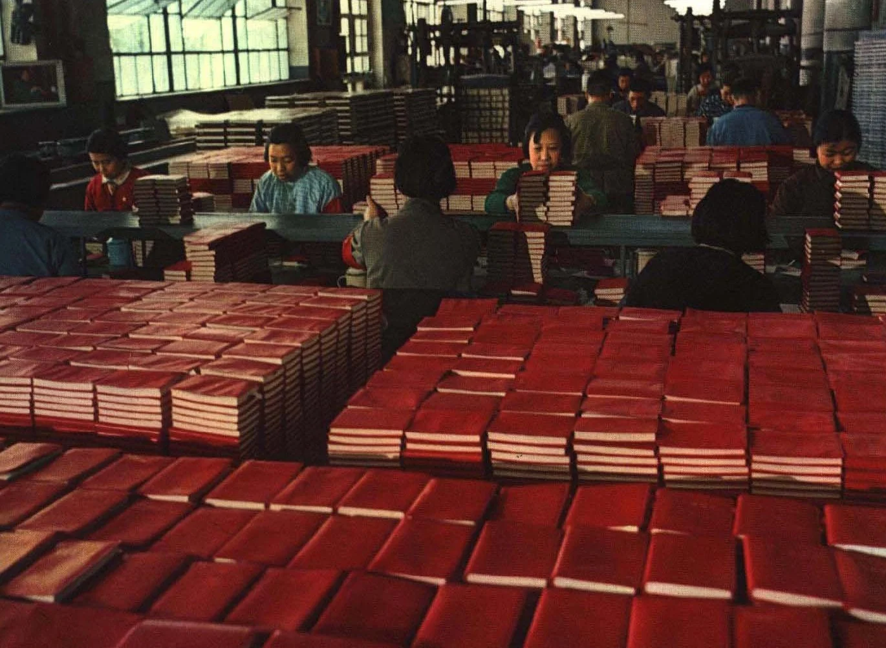
Stacks of the little red book at the Xinhua printing works, Beijing, 1967. Public domain, Wikimedia Commons.
Lin Biao, the defense minister, had compiled Quotations from Chairman Mao to teach his soldiers.
Red Guards waved the “little red book” at rallies; hundreds of millions of copies were printed.
Mao’s picture hung in every home, bus, and train, and his sayings blared from loudspeakers.
In 1969 the party wrote Lin Biao into its constitution as Mao’s successor.
Sources: Ebrey, Ch. 27, p. 484.
Q10 story · Cities large and small · 1966
Red Guards Smashed the “Four Olds” and Humiliated Their Teachers
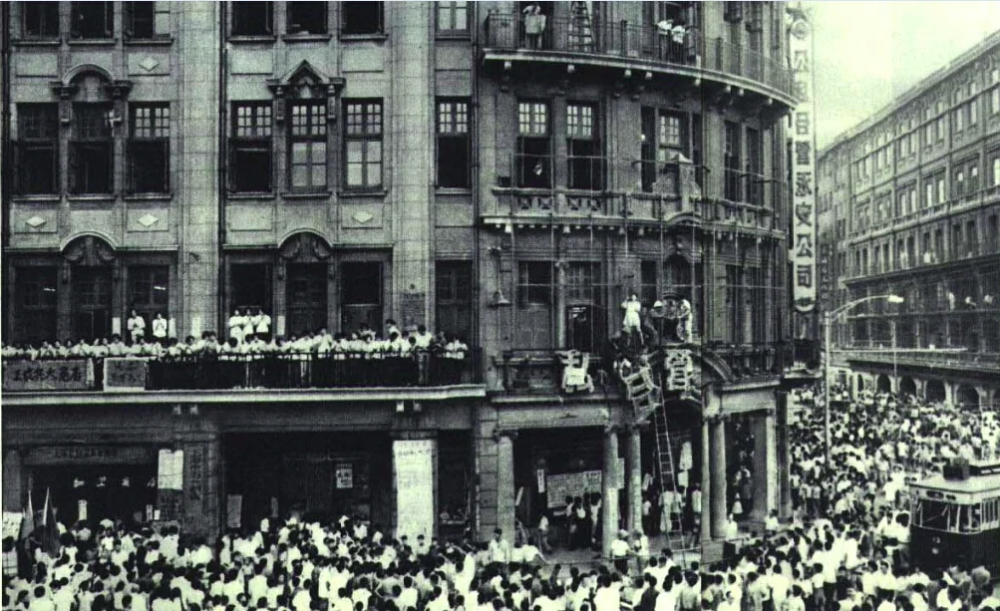
Red Guards take down the old sign of the Wing On department store in Shanghai, 1966. Public domain, Wikimedia Commons.
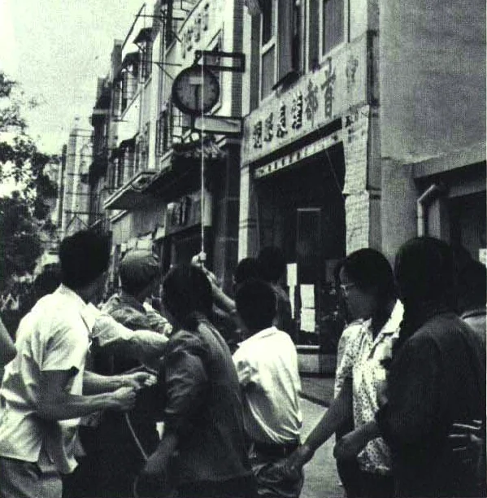
Red Guards remove the sign of an old watch shop, 1966. Public domain, Wikimedia Commons.
Red Guards set out to destroy the “four olds”: old customs, habits, culture, and thinking.
They renamed streets and shops, burned books, and broke temple statues and art.
They raided homes of people with “bad” class labels or foreign ties.
At struggle sessions teachers, writers, and officials were humiliated and beaten; many killed themselves.
Sources: Ebrey, Ch. 27, p. 484.
Q10 story · Beijing and Kaifeng · 1966–1969
Liu Shaoqi Died a Prisoner, and Deng Xiaoping Was Sent to a Factory
Liu Shaoqi and his wife, Wang Guangmei, with their family at the beach at Beidaihe, 1954. Public domain, Wikimedia Commons.
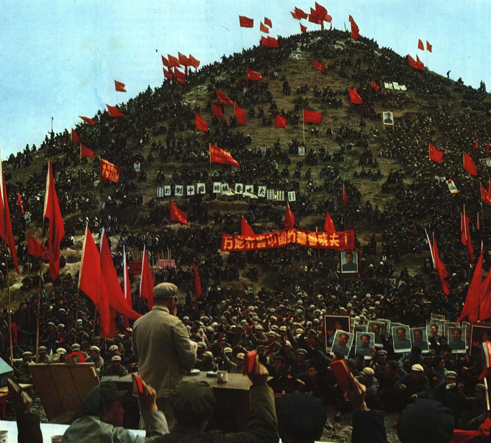
A mass meeting held to denounce Liu Shaoqi, 1967. Public domain, Wikimedia Commons.
Liu, still head of state, was labeled China’s “chief capitalist roader.”
In 1967 rebels besieged the leaders’ compound; Liu was dragged before meetings, beaten, and held.
He died in prison in 1969. His wife, Wang Guangmei, was jailed from 1967 to 1978.
Deng Xiaoping fared better: after struggle sessions he was sent to work in a factory in Jiangxi.
Sources: Ebrey, Ch. 27, pp. 484–486; MacFarquhar and Schoenhals, Mao’s Last Revolution (2006).
Self-check · Segment 1 · not graded
Quick Check: Mao Turned on His Party
Answer each question from memory, out loud or on paper, then click Show answer to check yourself. Nothing here is graded or recorded.
1. Who replaced Mao as head of state in 1959, and what did Mao come to fear about him?
Liu Shaoqi; Mao feared that Liu and Deng were revisionists leading the party back toward capitalism.
2. What was the first target of the Cultural Revolution?
Wu Han’s play Hai Rui Dismissed from Office, and the mayor of Beijing who had allowed it.
3. What two slogans did Mao give the Red Guards in 1966?
That “to rebel is justified,” and to “bombard the headquarters,” meaning the party leadership.
4. Name two things Red Guards did in their attack on the “four olds.”
Any two of: raided homes, burned books and art, smashed temples and signs, renamed streets, and humiliated teachers and officials at struggle sessions.
Rebel workers and Red Guards march through Shanghai to celebrate their seizure of power, early 1967. Public domain, Wikimedia Commons.
When the rebels fought each other, Mao called in the army, and then he lost his chosen heir.
This segment teaches the history behind Review Question 11, and it ends with a short self-check and then the question itself.
Q11 story · Shanghai, Wuhan, Beijing · 1967
Rebels Fought Each Other for Power, and Mao Sent in the Army
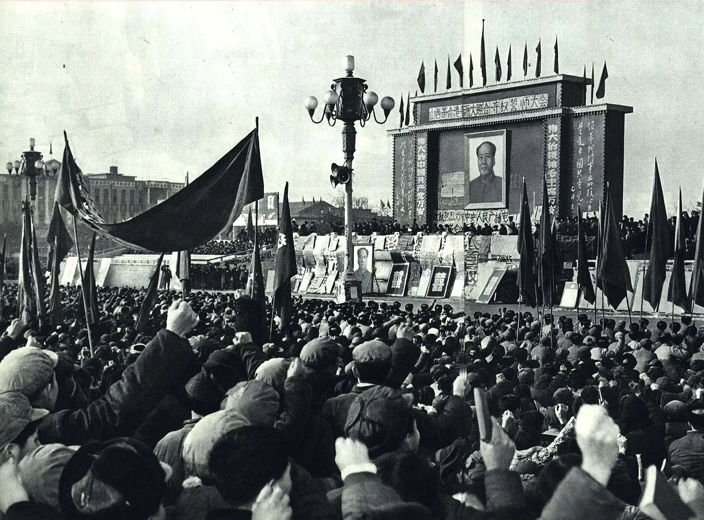
Rebel groups in Shanxi province rally to “seize power” from the provincial party, early 1967. Public domain, Wikimedia Commons.
By the end of 1966 rebel workers joined the students and “seized power” from party leaders.
Rival groups challenged every takeover as a “sham,” and fighting spread.
In Wuhan in July 1967 local forces seized two envoys from Beijing, and the radicals called on rebels to arm themselves.
Factions fought with guns; rebels burned the British mission in Beijing.
Sources: Ebrey, Ch. 27, pp. 486–487.
Q11 story · Villages across China · 1968–1980
Mao Disbanded the Red Guards and Sent 17 Million Young People to the Countryside
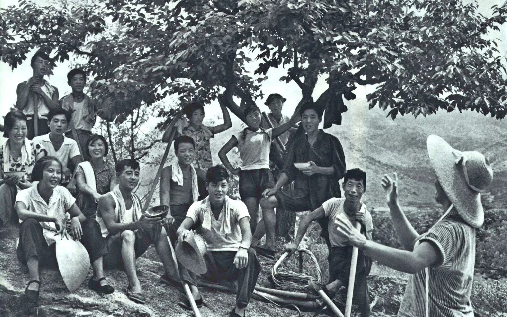
Young people from the city work on a farm in Changli County, Hebei, 1964. From 1968 such “sent-down” youth numbered in the millions. Public domain, Wikimedia Commons.
By the summer of 1968 Mao had to calm the movement to prevent a civil war.
In July he disbanded the Red Guards and sent them to work in the countryside.
High school graduates followed: about 17 million sent-down youth in all.
The official reason was to learn from the peasants; it also saved the cities jobs and housing.
Sources: Ebrey, Ch. 27, p. 487.
Q11 story · Every province · 1967–1971
Revolutionary Committees, Run by the Army, Took the Place of the Party
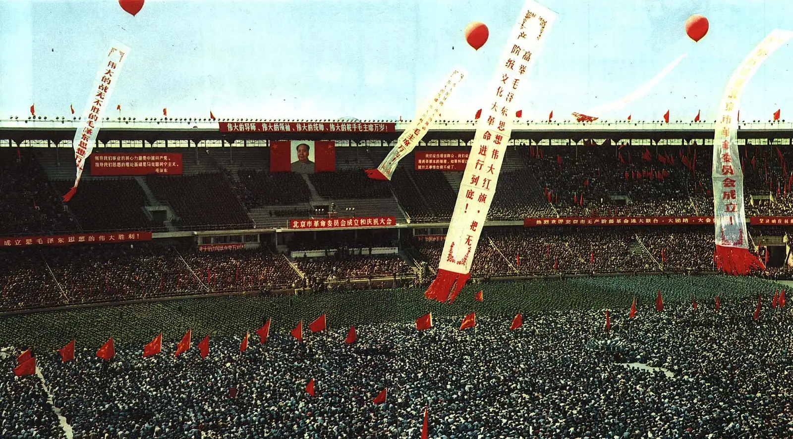
A rally in the Workers’ Stadium celebrates the founding of the Beijing Revolutionary Committee, 20 April 1967. Public domain, Wikimedia Commons.
Revolutionary committees joined rebels, loyal cadres, and army officers.
In most places the army quickly became the dominant force.
The worst killing came now, as the committees hunted “class enemies” in 1968–1971.
Some 3 million party and government officials had lost their jobs.
Sources: Ebrey, Ch. 27, pp. 486–487; Andrew G. Walder and Yang Su, “The Cultural Revolution in the Countryside,” China Quarterly 173 (2003).
Q11 story · Stages and screens · 1966–1976
Eight Model Operas Became Almost the Only Culture Allowed
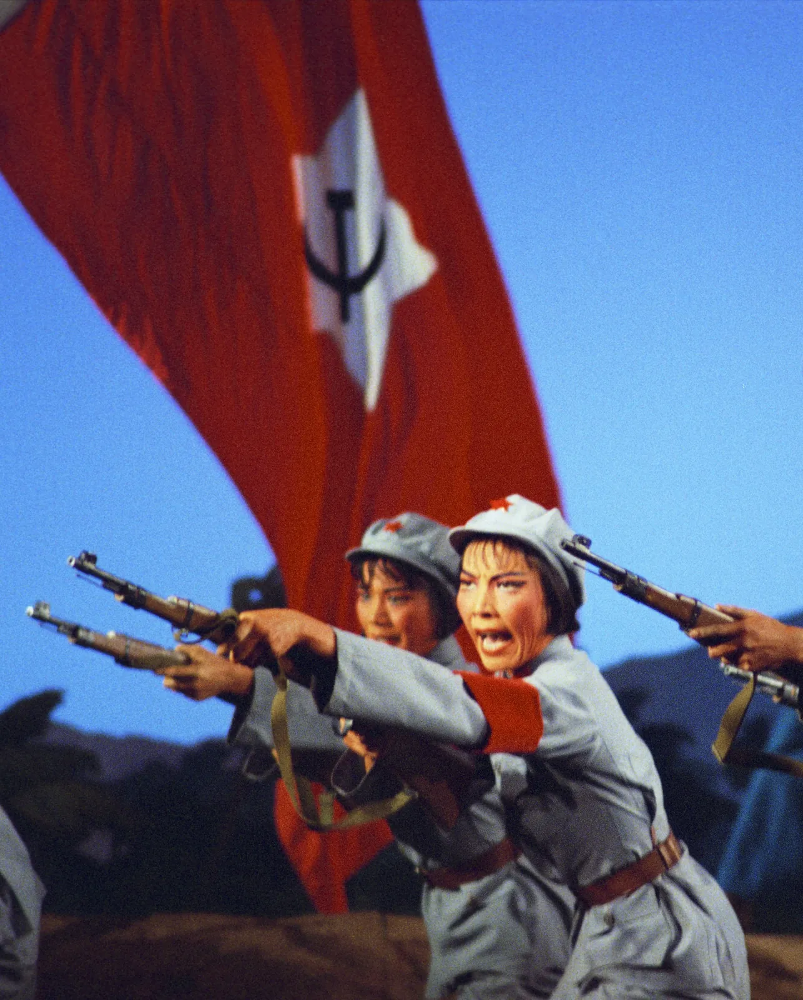
A scene from the ballet The Red Detachment of Women, performed for President Nixon in Beijing, 1972. White House photo. Public domain, Wikimedia Commons.
Foreign music, art, and books, except Marxist works, disappeared from the stores.
In their place came eight model works sponsored by Jiang Qing.
The official line was that it was better to be “red” than expert.
Doctors, scientists, and teachers were driven out of their fields or sent to labor.
Sources: Ebrey, Ch. 27, p. 487.
Q11 story · Beijing and Mongolia · 1969–1972
Mao’s Chosen Heir, Lin Biao, Died Fleeing China in 1971
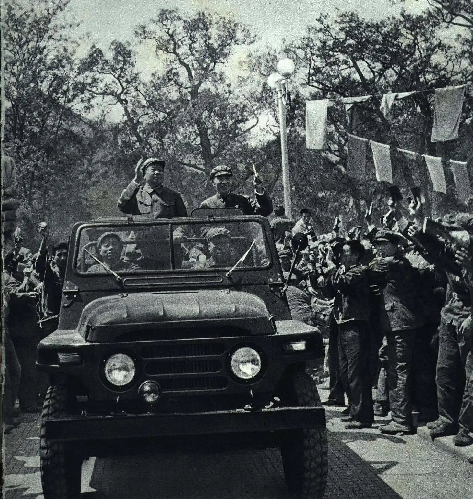
Mao and Lin Biao at the May Day celebrations, 1967. Lin was always photographed at Mao’s side. Public domain, Wikimedia Commons.
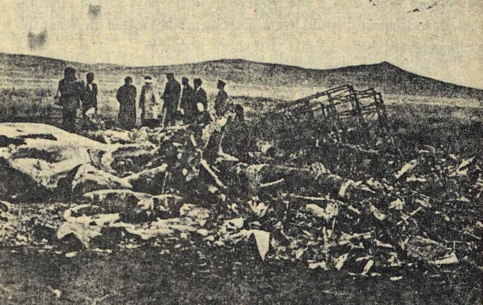
Wreckage of Lin Biao’s plane in Mongolia, September 1971. Public domain, Wikimedia Commons.
Lin Biao, compiler of the little red book, was Mao’s heir and was always shown at his side.
The official story: fearing Mao had turned on him, Lin plotted to kill Mao.
When his daughter exposed the plot, he fled toward the Soviet Union; the plane crashed in Mongolia.
The news was kept from the public for about a year.
Sources: Ebrey, Ch. 27, p. 487.
Self-check · Segment 2 · not graded
Quick Check: Order Under the Army
Answer each question from memory, out loud or on paper, then click Show answer to check yourself. Nothing here is graded or recorded.
1. Why did Mao turn to the army in 1967?
Rebel groups were fighting each other with weapons, and production and transport were breaking down.
2. What did Mao do with the Red Guards in July 1968?
He disbanded them and sent them to work in the countryside.
3. About how many young people were sent to the countryside, and what was the official reason?
About 17 million; officially, to learn from the peasants and share their education.
4. What happened to Lin Biao in 1971, according to the official story?
He plotted against Mao, fled toward the Soviet Union when exposed, and died when his plane crashed in Mongolia.
President Richard Nixon and Premier Zhou Enlai share a toast in Beijing, February 1972. White House photo. Public domain, Wikimedia Commons.
A visit from an American president, two deaths, an earthquake, and an arrest ended the Mao era.
This segment teaches the history behind Review Question 12, and it ends with a short self-check and then the question itself.
Q12 story · Beijing · 1972–1975
Nixon Came to Beijing, and Deng Xiaoping Came Back
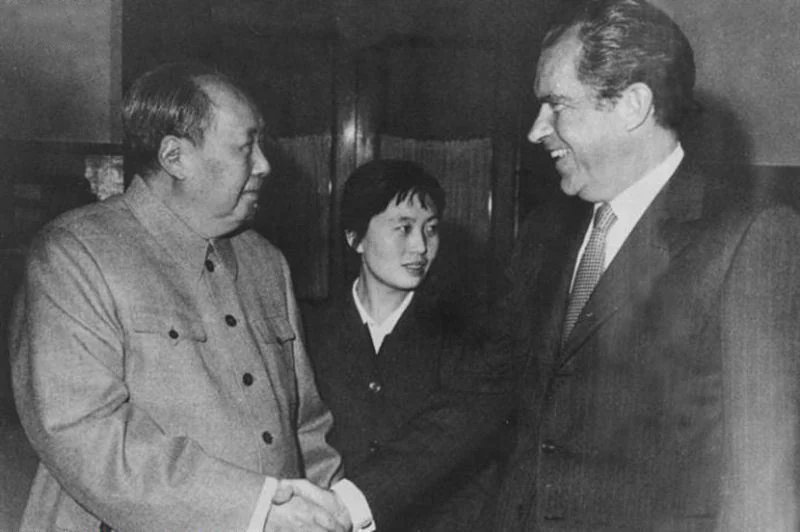
Mao meets President Nixon in Beijing, 21 February 1972, with his secretary Zhang Yufeng. White House photo. Public domain, Wikimedia Commons.
As Mao’s health declined, the radicals around Jiang Qing faced the moderates around Zhou Enlai.
Fearing the Soviet Union more than America, China welcomed President Nixon in February 1972.
In 1973 many purged leaders, including Deng Xiaoping, were brought back to high posts.
Zhou was dying of cancer, and Deng took over much of his work.
Sources: Ebrey, Ch. 27, p. 487.
Q12 story · Tiananmen Square · January–April 1976
China Mourned Zhou Enlai, and the Radicals Crushed the Mourning
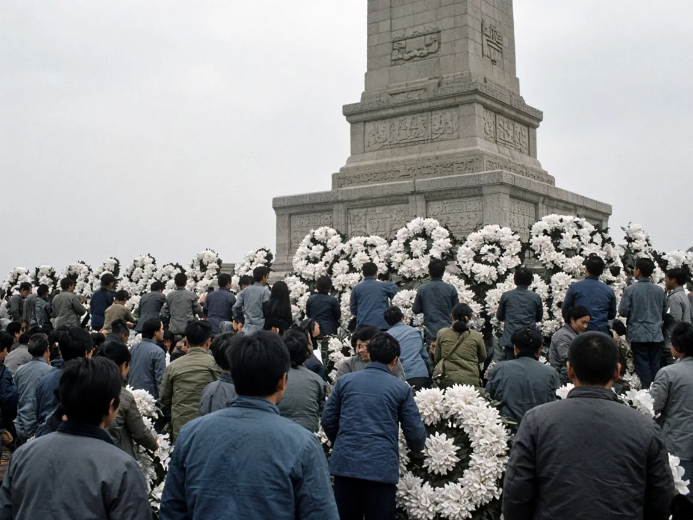
AI-generated illustration made for this deck: mourners lay white paper wreaths for Zhou Enlai at the Monument to the People’s Heroes, Tiananmen Square, April 1976. The carvings on the monument are invented. An interpretation, not a historical source.
Zhou Enlai died of cancer in January 1976.
On 4 April, the day for honoring the dead, about 2 million people brought wreaths for him to Tiananmen Square.
The radicals called it a counterrevolutionary incident and sent in the militia the next day.
Deng was blamed and stripped of his posts; Mao made Hua Guofeng premier and his successor.
Sources: Ebrey, Ch. 27, pp. 487–488.
Q12 story · Tangshan and Beijing · July 1976
An Earthquake Leveled the City of Tangshan in July
Ruins in Tangshan after the earthquake of 28 July 1976. U.S. NOAA photo. Public domain, Wikimedia Commons.
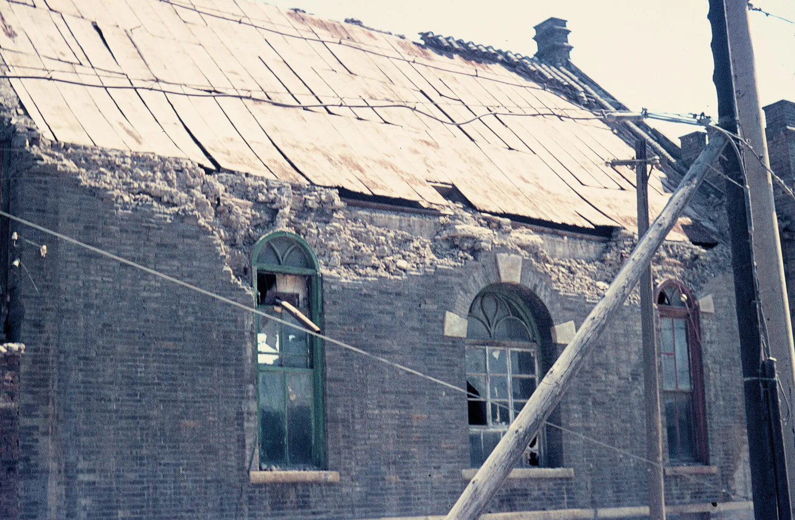
A damaged house in Beijing, September 1976; the quake was felt more than 150 kilometers away. Photo: Karl-Heinz Wellmann, CC BY-SA 4.0, Wikimedia Commons.
Early on 28 July 1976 an earthquake destroyed the industrial city of Tangshan, east of Beijing.
It killed hundreds of thousands of people; the official toll was about 242,000.
The government refused foreign help and relied on soldiers and local people.
Many Chinese still believed disasters warned that a dynasty’s time was ending.
Sources: Ebrey, Ch. 27, p. 487.
Q12 story · Beijing · September 1976
Mao Zedong Died on 9 September 1976
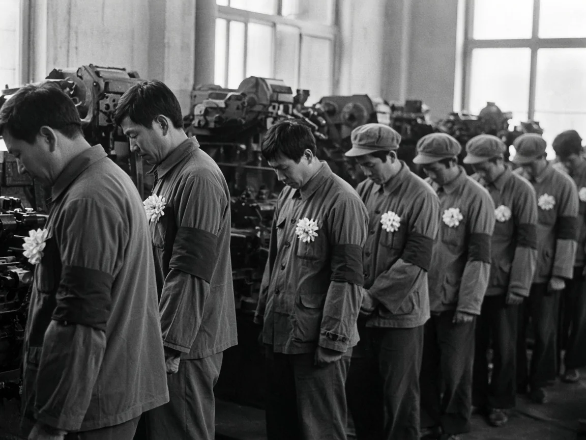
AI-generated illustration made for this deck: factory workers stand in silent mourning for Mao, September 1976. An interpretation, not a historical source.
Mao died just after midnight on 9 September 1976, aged eighty-two.
China held a month of national mourning; a million people gathered in Tiananmen Square.
As long as he lived, no one openly challenged him; now the struggle to succeed him came into the open.
His body was preserved and placed in a memorial hall in the square.
Sources: Ebrey, Ch. 27, pp. 487–488.
Q12 story · Beijing · 6 October 1976
Hua Guofeng Arrested the Gang of Four a Month After Mao’s Death
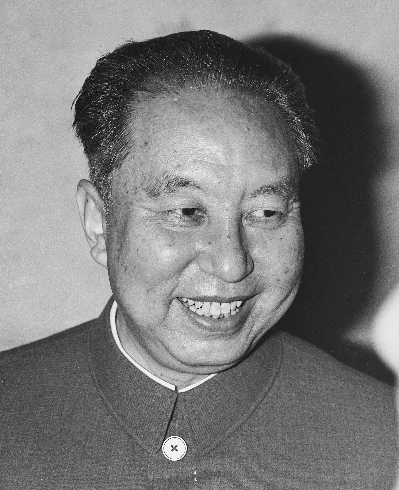
Hua Guofeng, Mao’s successor, in 1979. Public domain, Wikimedia Commons.
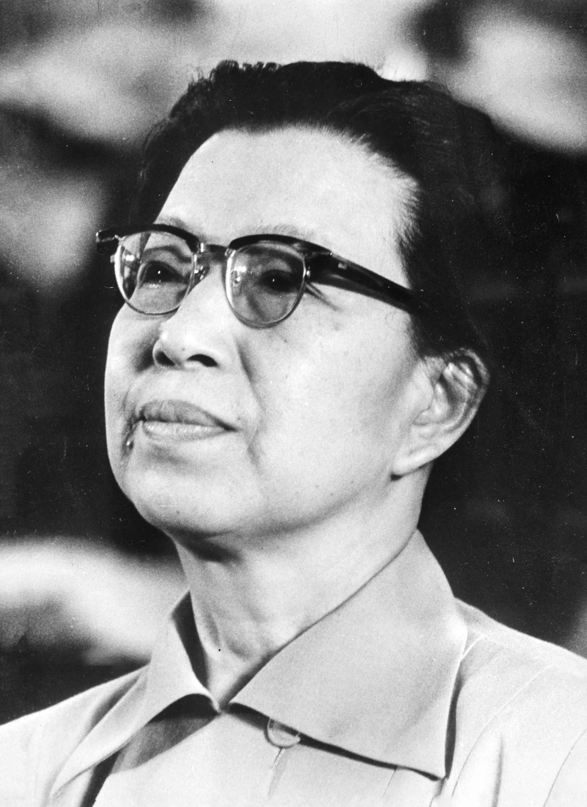
Jiang Qing, Mao’s wife, in the 1970s. Nationaal Archief (Netherlands), CC BY-SA 3.0 NL, Wikimedia Commons.
On 6 October 1976 Hua Guofeng, with Marshal Ye Jianying and Mao’s guard chief Wang Dongxing, struck first.
Jiang Qing and her three allies, the Gang of Four, were arrested.
Crowds celebrated in the streets; the four were blamed for the Cultural Revolution.
Deng Xiaoping returned in 1977 and soon pushed Hua aside.
Names to know
Hua GuofengMao’s successor, 1976
Ye Jianyingarmy marshal
Jiang QingMao’s widow
Zhang Chunqiao, Yao Wenyuan, Wang Hongwenher allies in the Gang of Four
Sources: Ebrey, Ch. 27, p. 488; MacFarquhar and Schoenhals, Mao’s Last Revolution (2006).
Self-check · Segment 3 · not graded
Quick Check: 1976
Answer each question from memory, out loud or on paper, then click Show answer to check yourself. Nothing here is graded or recorded.
1. Which American president visited China in 1972, and why did China welcome him?
Richard Nixon; China feared the Soviet Union and wanted better relations with the United States.
2. What happened in Tiananmen Square on 4–5 April 1976?
About 2 million people brought wreaths to mourn Zhou Enlai; the radicals called it counterrevolutionary and the militia cleared the square.
3. Name the two deaths and the disaster of 1976, in order.
Zhou Enlai (January), the Tangshan earthquake (July), and Mao Zedong (September).
4. Who arrested the Gang of Four, and when?
Hua Guofeng, with Ye Jianying and Wang Dongxing, on 6 October 1976, a month after Mao’s death.
China in 1976 Was Healthier and Better Schooled, but Far Less Free
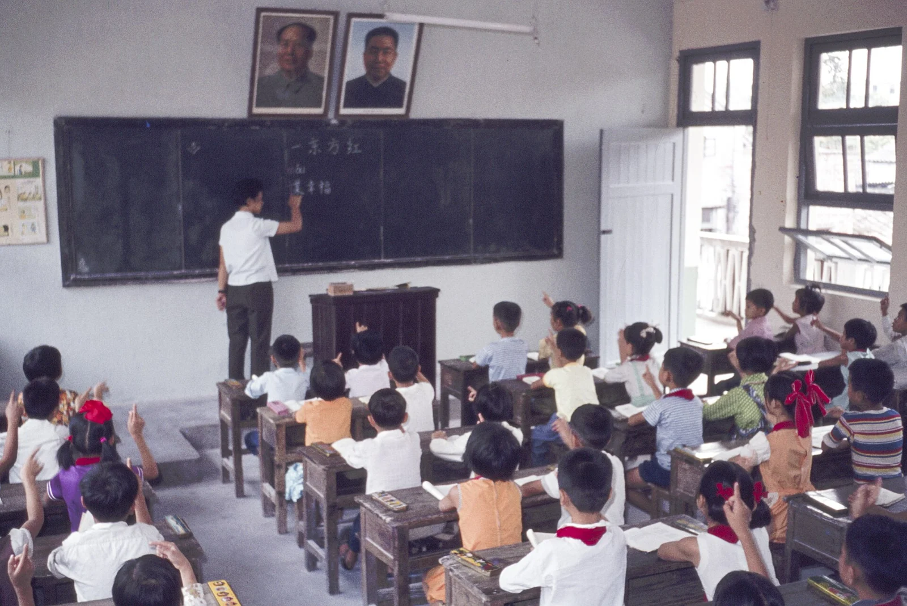
A primary school class, 1978. The share of Chinese in school more than doubled between 1950 and 1978. Photo: Wendwelly, CC BY-SA 4.0, Wikimedia Commons.
No foreign power dominated China, and it presented itself as a model to poorer nations.
School enrollment more than doubled; life expectancy reached 67 for men and 69 for women.
Jobs and housing were provided, and inflation had been banished.
But there was no free press, peasants could not leave their villages, and people learned to distrust each other.
Sources: Ebrey, Ch. 27, pp. 488–489.
Next · Course wrap-up
Next: Wrapping Up the Course
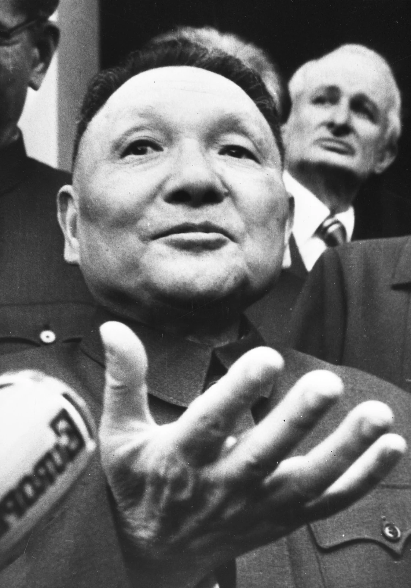
Deng Xiaoping in the mid-1970s. Purged twice, he led China into a new era from 1978. Nationaal Archief (Netherlands), CC BY-SA 3.0 NL, Wikimedia Commons.
This is the last lecture of the course. Ebrey’s next chapter tells how, within a few years of Mao’s death, much of what he built was undone.
The wrap-up brings the course together: what changed in China over three thousand years, and what lasted.
Your remaining work and all due dates are on Canvas.
Today's lecture ends here. Continue on your own: these short stories let the Red Guards speak in their own words and follow how China has judged Mao.
"A little learning is a dang'rous thing; Drink deep, or taste not the Pierian spring."Alexander Pope, An Essay on Criticism, 1711
PS · Q10 story · A Beijing high school · 1966
Red Guards Wrote: “Long Live the Revolutionary Rebel Spirit”
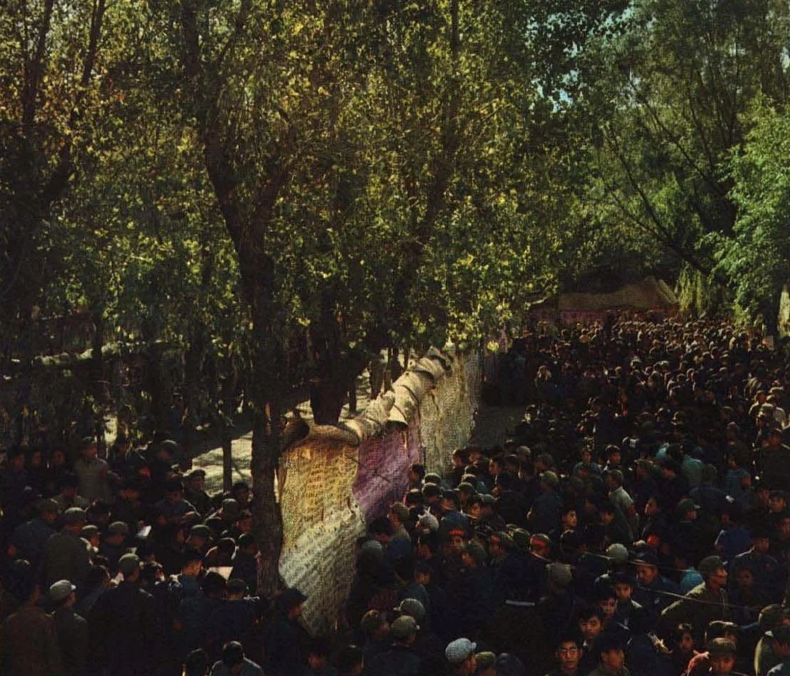
Crowds read big-character posters on a Beijing street, 1967. Public domain, Wikimedia Commons.
Red Guards at the middle school attached to Tsinghua University wrote this poster in 1966.
The party journal Red Flag printed it in 1966 as a model for others.
It calls opponents “revisionists” and boasts of being arrogant, crude, and one-sided.
Revolution is rebellion, and rebellion is the soul of Mao Zedong’s thought. … Not to rebel is revisionism, pure and simple! Revisionism has been in control of our school for seventeen years. If today we do not rise up in rebellion, when will we?
Red Guards of the middle school attached to Tsinghua University, 1966 (Ebrey, p. 485)
Sources: Ebrey, Ch. 27, p. 485, from Ebrey, ed., Chinese Civilization: A Sourcebook (1993).
PS · Judging Mao · Beijing · 1981
In 1981 the Party Judged That Mao’s Merits Were Primary and His Errors Secondary
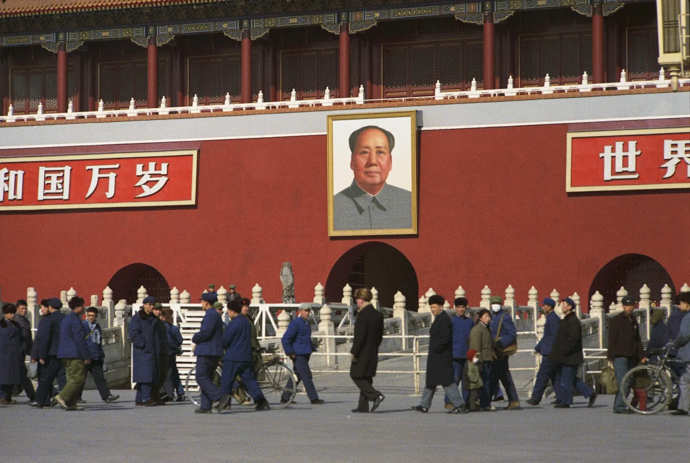
Mao’s portrait on the Tiananmen gate, February 1972. It still hangs there today. White House photo. Public domain, Wikimedia Commons.
In June 1981 the party issued its official verdict on Mao.
It praised his leadership in the revolution and his ideas, “Mao Zedong Thought.”
It blamed him for the errors of his later years, above all the Cultural Revolution.
Since then, critics have called him a monster; others warn that this excuses everyone else.
Sources: Ebrey, Ch. 27, p. 488; Communist Party of China, Resolution on Certain Questions in the History of Our Party (1981).
PS · Judging Mao · Ming and People’s Republic · 1368 and 1949
Historians Have Compared Mao with Zhu Yuanzhang, Founder of the Ming
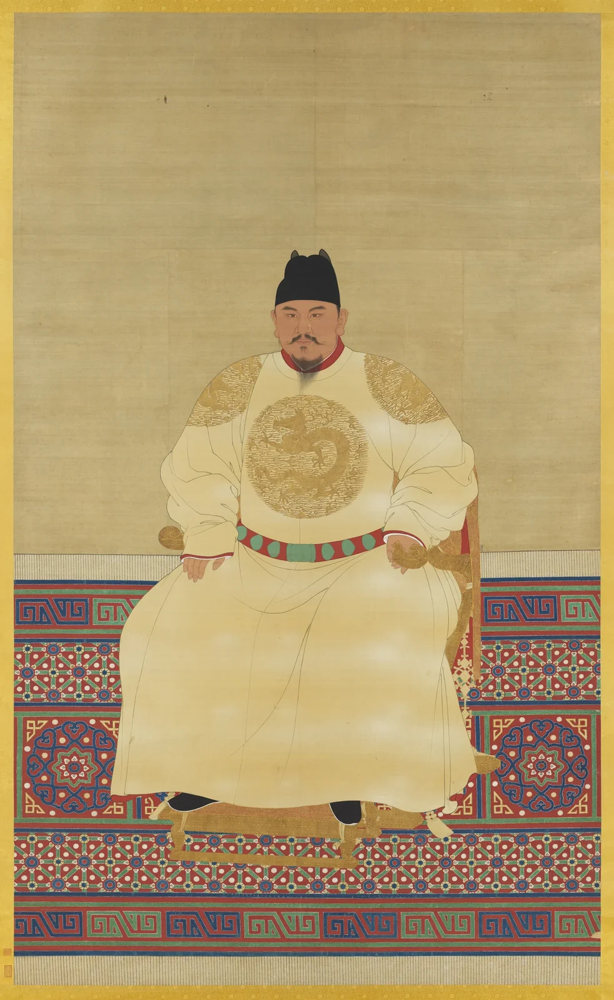
Zhu Yuanzhang, the Hongwu emperor, founder of the Ming, in a Ming court portrait. National Palace Museum, Taipei. Public domain, Wikimedia Commons.
Both grew up in farming families and won power after long years of war. Ch. 14 L1 · purge-1376 ↗
Both brooked no opposition, executed perceived enemies, and suspected treason others could not see.
But Zhu’s system shaped the Ming for nearly three centuries.
Within a few years of Mao’s death, much of what he built was undone.
Sources: Ebrey, Ch. 27, p. 488.
Self-check · Pierian Spring · not graded
Quick Check: Red Guard Words and Judging Mao
Answer each question from memory, out loud or on paper, then click Show answer to check yourself. Nothing here is graded or recorded.
1. Who wrote the poster in the textbook’s Documents box, and who chose it as a model?
Red Guards at the middle school attached to Tsinghua University; the party journal Red Flag, in 1966.
2. What did the party’s 1981 resolution conclude about Mao?
His merits were primary and his errors secondary, but he bore chief responsibility for the Cultural Revolution.
3. Why do some Chinese intellectuals worry about calling Mao a monster?
It lets everyone else off the hook and weakens the case for changing the system that made the tragedies possible.
4. Name two ways Ebrey says Mao resembled Zhu Yuanzhang.
Any two of: farming background, shaped by long war, no tolerance for opposition, executed opponents, paranoid suspicion.
Patricia Buckley Ebrey, A History of China, Chapter 27, "China Under Mao (1949–1976)," pp. 484–489, including the Documents box "Big Character Poster," p. 485. All page references in this deck are to these pages.
Further reading
The Cultural Revolution: Roderick MacFarquhar and Michael Schoenhals, Mao's Last Revolution (2006). Andrew G. Walder and Yang Su, "The Cultural Revolution in the Countryside," China Quarterly 173 (2003). Andrew G. Walder, Agents of Disorder (2019).
Red Guards and sent-down youth: Anita Chan, Children of Mao (1985). Michel Bonnin, The Lost Generation (2013).
1976 and after: Frederick C. Teiwes and Warren Sun, The End of the Maoist Era (2007). Communist Party of China, Resolution on Certain Questions in the History of Our Party (1981).
Images (real, via Wikimedia Commons)
Most photographs are historical and public domain (Chinese press photographs of the 1960s, U.S. government photographs of 1972, and a NOAA photograph). Credited exceptions: the Beijing house of 1976 (Karl-Heinz Wellmann, CC BY-SA 4.0), the 1978 classroom (Wendwelly, CC BY-SA 4.0), and Jiang Qing and Deng Xiaoping (Nationaal Archief, CC BY-SA 3.0 NL). Each caption links its Commons page.
AI-generated illustrations
x: mourners lay wreaths for Zhou Enlai in Tiananmen Square, April 1976. z: factory workers mourn Mao, September 1976. AI-generated illustrations made for this deck, not historical sources.
A teal dotted word opens a short definition like this one.
Close it with Esc, the × mark, or a click outside the card.
×
Revisionism
Revisionism, in Mao’s use, meant “revising” Marxism away from class struggle and toward capitalist methods such as profits, bonuses, and experts in charge. Mao used it as a charge against the Soviet leaders, and then against his own colleagues.
×
Revisionism
Revisionism, in Mao’s use, meant steering socialism back toward capitalist methods and away from class struggle. Calling someone a revisionist made them an enemy of the revolution.
×
Red Guards
Red Guards were groups of students, mostly from high schools and universities, who pledged to defend Mao and attack his enemies, from 1966 to 1968.
×
Four Olds
The Four Olds were old customs, old habits, old culture, and old thinking. Red Guards treated anything traditional, religious, or foreign as one of them.
×
Struggle session
A struggle session was a public meeting at which a person accused of political crimes was forced to confess while a crowd shouted accusations, often with violence.
×
Capitalist roader
A capitalist roader was a party official accused of taking China down “the capitalist road.” The label could cost a person his job, his freedom, or his life.
×
Sent-down youth
Sent-down youth were city students and graduates sent to live and work in villages or on state farms, from 1968 until the late 1970s. Most could not return home for years.
×
Revolutionary committee
A revolutionary committee was the body that ran a province, city, factory, or school after 1967, made up of army officers, “revolutionary” cadres, and rebel leaders.
×
Model works
The model works (model operas) were eight revolutionary operas and ballets approved by Jiang Qing. From 1967 to 1976 they were nearly the only performances allowed.
×
Gang of Four
The Gang of Four was the name given after their arrest to Jiang Qing and her Shanghai allies Zhang Chunqiao, Yao Wenyuan, and Wang Hongwen, the leading radicals of the Cultural Revolution.